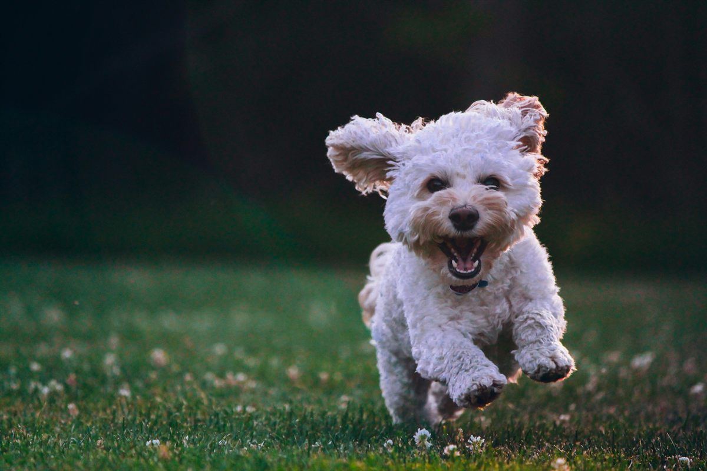

Contacto
¿Tenés dudas o querés hacer un pedido especial? Escribinos y te respondemos a la brevedad.
- Instagram: @pasteleriacanina.nqn
- Escribinos por WhatsApp
Horarios y entregas
- Atención: lunes a viernes de 10 a 19 hs
- Pedidos especiales: coordinar con al menos 48 hs de anticipación
- Entregas en Neuquén Capital y alrededores
Preguntas frecuentes
- ¿Hacen envíos fuera de Neuquén?
- Por el momento solo entregamos en Neuquén Capital y zonas cercanas. Consultanos tu ubicación por WhatsApp.
- ¿Puedo pedir algo sin gluten o para mascotas con alergias?
- Sí, todos nuestros productos se pueden adaptar según intolerancias o alergias. Contanos el caso puntual y armamos una receta a medida.
- ¿Con cuánta anticipación tengo que pedir una torta personalizada?
- Recomendamos coordinar con al menos 48 hs de anticipación para asegurar el diseño y los ingredientes.